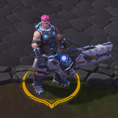
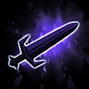
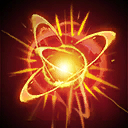
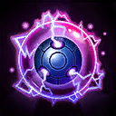
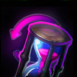
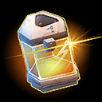
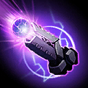
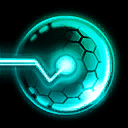
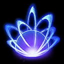

Zarya
Welcome to our Zarya guide for Heroes of the Storm. Here you will learn everything you need to know in order to play Zarya in a competitive environment, whether you play on your own or with a team.
Anti Melee Build
| Level 1 | Level 4 | Level 7 | Level 10 | Level 13 | Level 16 | Level 20 |
|---|---|---|---|---|---|---|
|  |  |  |  |
The Anti Melee Build is great, as the name suggests, against enemy melee Heroes who usually have to approach Zarya in order to damage her. In those situations, Feel the Heat Icon Feel the Heat at Level 1 can become an insanely good talent to heavily damage multiple Heroes at the same time, especially while on high Energy.
Energy Build
| Level 1 | Level 4 | Level 7 | Level 10 | Level 13 | Level 16 | Level 20 |
|---|---|---|---|---|---|---|
|  |
The Energy Build provides Zarya with both offensive and defensive capabilities. Maximum Charge Icon Maximum Charge at Level 1 lays the foundation for talents that benefit from the higher Energy threshold, such as To the Limit Icon To the Limit or Endurance Training Icon Endurance Training.
Grenadier Build
| Level 1 | Level 4 | Level 7 | Level 10 | Level 13 | Level 16 | Level 20 |
|---|---|---|---|---|---|---|
|  |  |  |
The Grenadier Build relies on strong AoE damage by firing Particle Grenade Icon Particle Grenades in quick succession. Demolitions Expert Icon Demolitions Expert at Level 1 proves to be quite important to achieve that. Pinpoint Accuracy Icon Pinpoint Accuracy at Level 7 and Plasma Shock Icon Plasma Shock at Level 16 are nice follow-up talents to complement this Grenade heavy Build. Depending on the course of the game and your team composition you may want to choose Grenadier Icon Grenadier at Level 20 if your team needs additional AoE damage or Unyielding Defender Icon Unyielding Defender if you need additional protection. It is very important to stress that we do recommend using Quick Cast on Particle Grenade Icon Particle Grenade's Hotkey when using this Build. Doing so makes the ability more responsive and causes less delay, which greatly benefits your overall accuracy.
Go Back